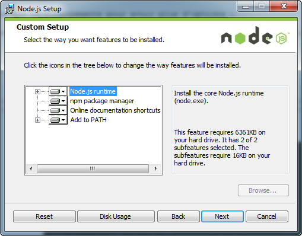
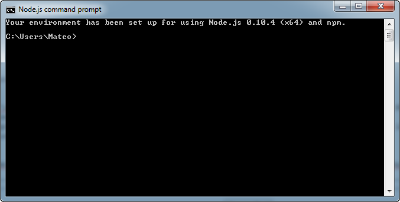
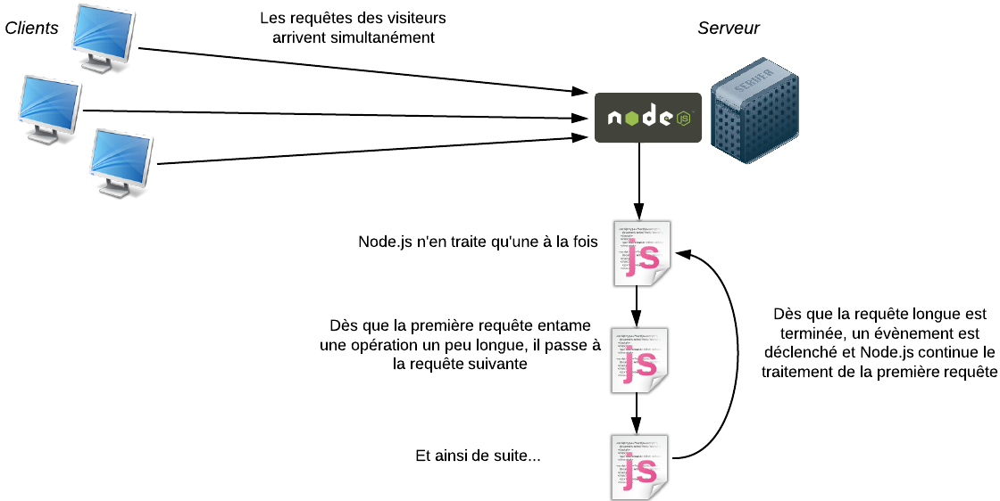

Node.js, c'est un peu l'outil dont les développeurs web entendent parler tout le temps en ce moment. Il y a ceux qui connaissent (et qui ont l'air de s'éclater en l'utilisant) et il y a ceux qui se disent "Bon, ça serait bien que j'y jette un oeil, mais je ne sais pas par où commencer".
Vous êtes de ceux-là ? Ca tombe bien, je l'ai été moi aussi ! ;)
Pourquoi la communauté des développeurs web est-elle autant excitée par Node.js ? Pourquoi cet intérêt aussi massif pour le langage JavaScript ? Cacherait-il des ressources insoupçonnées ? Ou tout ça n'est qu'un effet de mode qui passera aussi vite qu'il est arrivé ?
Le mieux pour se faire une idée est de le tester. Si vous avez déjà un bon niveau en développement web, il ne vous faudra que quelques jours pour couvrir globalement Node.js en surface et savoir ce qu'il vaut et à quoi il sert. Et si vous voulez aller plus loin, il ne tiendra plus qu'à vous de pratiquer plus en profondeur !
OK, j'avoue, l'expression "JavaScript à la papa" est un peu forte. :-° Mais il y a du vrai là-dedans : JavaScript a eu plusieurs vies. Il a eu mauvaise presse. On l'a considéré comme un "petit truc parfois bien pratique", longtemps pour "faire des effets dans sa page web". Or, JavaScript est avant tout un langage. Un langage au même titre que le C, Ruby, PHP et bien d'autres.
Aujourd'hui, JavaScript est de retour et il prend sa revanche. :pirate: En quelque sorte, les développeurs sont en train de découvrir que ce langage qu'ils ont longtemps ignoré, parfois même méprisé, cache en fait bien son jeu.
Non, JavaScript n'est pas juste un petit langage utilitaire. Oui, JavaScript est un langage à part, qui s'utilise vraiment différemment de Java, du C et d'un tas d'autres langages. Oui, JavaScript peut être compliqué à utiliser, mais recèle derrière ça d'une vraie puissance.
Alors que ce langage a été créé en 1995 (la préhistoire de l'informatique, vous vous rendez compte !), il a depuis bien évolué. Je vous invite à (re)lire la petite histoire de JavaScript racontée par les compères Thunderseb et Nesquik69 dans leur tutoriel JavaScript.
Je vous disais que JavaScript était un langage qui, pour moi, avait connu plusieurs vies. Pour situer les choses, je dirais même qu'il a connu 3 vies :
Dans les années 90, on parlait de DHTML (Dynamic HTML). On utilisait en fait les toutes premières versions de JavaScript pour faire des petits effets dans ses pages web : afficher une image lors d'un clic sur un bouton par exemple. C'était l'époque de Netscape et d'Internet Explorer 5.5 (mon Dieu ça me rajeunit pas !).
Dans les années 2000, on a commencé à utiliser le langage pour créer des interfaces côté client. C'est là que des bibliothèques comme jQuery ou Mootools sont apparues. Aujourd'hui, cet usage de JavaScript est très répandu et mature. On a pris l'habitude de manipuler le DOM (Document Object Model) pour affecter ses balises HTML en JavaScript et leur faire subir toutes sortes de traitements.
Puis, aux alentours de 2010, JavaScript est entré dans une nouvelle ère. Google a commencé à rendre le langage beaucoup plus rapide avec l'apparition du navigateur Google Chrome. Avec ce navigateur est né le moteur d'exécution V8 qui a considérablement permis d'accélérer l'exécution de code JavaScript (j'y reviendrai). Des outils comme Node.js sont ensuite apparus. Les bibliothèques dont le nom finit par .js se sont multipliées : Backbone.js, Ember.js, Meteor.js. JavaScript a l'air à nouveau cool... et semble en même temps plus compliqué qu'il n'y paraissait au premier abord.
Les 3 vies de JavaScript
Soyons clairs : jQuery n'est pas mort et ça ne veut pas dire qu'il faut cesser de l'utiliser (par contre DHTML et Netscape sont bel et bien morts eux :p ). Les nouveaux outils JavaScript comme Node.js font des choses très différentes de jQuery et consorts. Les deux peuvent tout à fait se compléter.
Bon, mais ça apporte quoi concrètement Node.js ?
Node.js nous permet d'utiliser le langage JavaScript sur le serveur... Il nous permet donc de faire du JavaScript en dehors du navigateur ! Node.js bénéficie de la puissance de JavaScript pour proposer une toute nouvelle façon de développer des sites web dynamiques.
Je vous propose justement maintenant de rentrer dans le détail du fonctionnement de Node.js. :)
Jusqu'ici, JavaScript avait toujours été utilisé du côté du client, c'est-à-dire du côté du visiteur qui navigue sur notre site. Le navigateur web du visiteur (Firefox, Chrome, IE...) exécute le code JavaScript et effectue des actions sur la page web.
Le schéma classique : PHP sur le serveur, JavaScript chez le client
Qu'est-ce qui change avec l'arrivée de Node.js ?
On peut toujours utiliser du JavaScript côté client pour manipuler la page HTML. Ca, ça ne change pas.
Par contre, Node.js offre un environnement côté serveur qui nous permet aussi d'utiliser le langage JavaScript pour générer des pages web. En gros, il vient en remplacement de langages serveur comme PHP, Java EE, etc.
Avec Node.js, on peut aussi utiliser du JavaScript sur le serveur !
Pourquoi Node.js semble-t-il si différent ? Parce qu'il utilise JavaScript ?
Oui, et parce que JavaScript est un langage basé sur les évènements, donc Node.js est lui-même basé sur les évènements. Du coup, c'est toute la façon d'écrire des applications web qui change ! Et c'est de là que Node.js tire toute sa puissance et sa rapidité.
Avec Node.js, vous pouvez créer des applications rapides comme :
Un serveur de Chat
Un système d'upload très rapide
... et de façon générale n'importe quelle application qui doit répondre à de nombreuses requêtes rapidement et efficacement, en temps réel
JavaScript n'est pas vraiment un langage orienté objet, il est donc très loin de Java, Ruby ou Python. Ecrire une application avec Node.js demande une gymnastique d'esprit complètement différente ! C'est un peu déroutant au début pour tout vous avouer, mais quand on commence à maîtriser cet outil, on se sent un peu comme si on venait d'avoir de nouveaux super-pouvoirs qu'on ne soupçonnait pas. Voilà pourquoi tant de geeks barbus sont excités à propos de Node.js !
Si Node.js est rapide, cela tient principalement à deux choses : le moteur V8 et son fonctionnement non bloquant.
Le moteur V8
Node.js utilise le moteur d'exécution ultrarapide V8 de Google Chrome. Ce moteur V8 avait fait beaucoup parler de lui à la sortie de Google Chrome, car c'est un outil open source créé par Google qui analyse et exécute du code JavaScript très rapidement.
Le logo du moteur JavaScript V8 de Google
Jusqu'à la sortie de Chrome, la plupart des navigateurs lisaient le code JavaScript de façon peu efficace : le code était lu et interprété au fur et à mesure. Le navigateur mettait beaucoup de temps à lire le JavaScript et à le transformer en code machine compréhensible pour le processeur.
Le moteur V8 de Google Chrome, qui est réutilisé ici par Node.js, fonctionne complètement différent. Très optimisé, il fait ce qu'on appelle de la compilation JIT (Just In Time). Il transforme le code JavaScript très rapidement en code machine et l'optimise même grâce à des procédés complexes : code inlining, copy elision et j'en passe.
Vous n'avez pas besoin de connaître le fonctionnement de V8 pour utiliser Node.js. Retenez juste qu'il permet de rendre l'exécution de code JavaScript ultrarapide (et que les développeurs chez Google qui l'ont conçu sont des bons vrais barbus :-° ).
Le modèle non bloquant
Comme JavaScript est un langage conçu autour de la notion d'évènement, Node.js a pu mettre en place une architecture de code entièrement non bloquante.
Mais au fait, connaissez-vous la différence entre un code bloquant et un code non bloquant ? Hmmm, un peu d'explications ne peuvent pas faire de mal je vois ! ;)
Modèle bloquant vs modèle non bloquant
Imaginez un programme dont le rôle est de télécharger un fichier puis de l'afficher. Voici comment on écrirait le code dans un modèle bloquant :
Télécharger un fichier
Afficher le fichier
Faire autre chose
Les actions sont effectuées dans l'ordre. Il faut lire les lignes de haut en bas :
Le programme va télécharger un fichier sur Internet
Le programme affiche le fichier à l'utilisateur
Puis ensuite le programme peut faire d'autres choses (effectuer d'autres actions)
Maintenant, on peut écrire le même code sur un modèle non bloquant :
Télécharger un fichier
Dès que c'est terminé, afficher le fichier
Faire autre chose
Le programme n'exécute plus les lignes dans l'ordre où elles sont écrites. Il fait ceci :
Le programme lance le téléchargement d'un fichier sur Internet
Le programme fait d'autres choses (le programme suit son cours)
Dès que le téléchargement est terminé, le programme effectue les actions qu'on lui avait demandées : il affiche le fichier
Schématiquement, l'exécution du programme peut donc se représenter comme ça :
Le modèle non bloquant en programmation
C'est justement comme ça que fonctionne Node.js. Dès que l'évènement "Fichier téléchargé" apparaît, une fonction appelée fonction de callback est appelée et effectue des actions (ici, la fonction de callback affiche le fichier).
Le modèle non bloquant avec Node.js
Bon, et avec du vrai code ça donne quoi ? Voici un exemple de programme Node.js qui télécharge un fichier sur Internet et affiche "Fichier téléchargé !" quand il a terminé :
request('http://www.site.com/fichier.zip', function (error, response, body) {
console.log("Fichier téléchargé !");
});
console.log("Je fais d'autres choses en attendant...");
La requête de téléchargement est lancée en premier. Ensuite, le programme fait d'autres choses (ici, il affiche un message dans la console, mais il pourrait faire n'importe quoi d'autre). Dès que le téléchargement est terminé, le programme va à la ligne 2 et affiche "Fichier téléchargé !".
Mais... Comment ça marche ? Je vois une fonction en paramètre de la fonction request ! C'est une fonction dans une fonction, au secours ces barbus sont fous ! :waw:
Hola pas de panique. :p Ce que vous voyez là est une fonction de callback. En JavaScript on peut tout à fait envoyer une fonction en paramètre d'une autre fonction. Cela signifie ici : "Exécute cette fonction quand le téléchargement est terminé".
Ici, la fonction n'a pas de nom. On dit que c'est une fonction anonyme. Mais on pourrait décomposer ce code comme ceci, le résultat serait identique :
// Résultat identique au code précédent
var callback = function (error, response, body) {
console.log("Fichier téléchargé !");
});
request('http://www.site.com/fichier.zip', callback);
console.log("Je fais d'autres choses en attendant...");
La fonction de callback est enregistrée dans une variable. Comme toutes les fonctions, elle n'est pas exécutée tant qu'on ne l'a pas appelée. Ensuite, on envoie cette fonction de callback en paramètre de la fonction request() pour dire : "Dès que la requête de téléchargement est terminée, appelle cette fonction de callback".
En pratique, les développeurs JavaScript mettent régulièrement des fonctions anonymes directement à l'intérieur d'autres fonctions en paramètre, comme dans mon premier code. C'est un peu étrange au début mais on s'y fait vite !
Je ne vois pas pourquoi ça rendrait le programme plus rapide. J'ai l'impression que ça le rend surtout plus compliqué !
Je vous avais dit que Node.js n'était pas simple, mais le jeu en vaut la chandelle ! Vous allez comprendre pourquoi. Imaginez qu'on demande le téléchargement de 2 fichiers à Node.js :
var callback = function (error, response, body) {
console.log("Fichier téléchargé !");
});
request('http://www.site.com/fichier.zip', callback);
request('http://www.site.com/autrefichier.zip', callback);
Si le modèle avait été bloquant, le programme aurait :
Lancé le téléchargement du fichier 1, et attendu qu'il se termine...
... puis lancé le téléchargement du fichier 2, et attendu qu'il se termine.
Or, avec Node.js, les deux téléchargements sont lancés en même temps ! Le programme n'attend pas la fin du premier téléchargement pour passer à l'instruction suivante.
Du coup, le téléchargement des 2 fichiers au total va beaucoup plus vite puisque le programme fait les 2 à la fois :
En modèle non bloquant (comme Node.js), les 2 fichiers sont téléchargés en même temps et l'ensemble finit plus vite
Dans les applications web, il est courant d'avoir des opérations longues et bloquantes comme :
Les appels aux bases de données
Les appels à des services web (ex : l'API de Twitter)
Node.js nous évite de perdre du temps en nous permettant de faire d'autres choses en attendant que les actions longues soient terminées !
Vous êtes convaincus ? Vous voulez vous mettre à Node.js ? Très bien ! N'attendons pas alors, et installons la bête ! :pirate:
Dans ce chapitre, nous couvrirons l'installation pour chaque OS :
Windows
Mac OS X
Linux
Vous devez juste lire la section qui correspond à votre système d'exploitation. Il n'y aura rien de bien difficile ici rassurez-vous.
Ensuite, nous testerons une toute première application très simple pour vérifier que Node.js est bien installé et fonctionne correctement. Cette dernière section doit évidemment être lue par tout le monde si vous voulez être prêts pour le prochain chapitre. ;)
Pour installer Node.js sous Windows, il suffit de télécharger l'installeur qui est proposé sur le site de Node.js. Cliquez simplement sur le lien Install.
Vous pouvez aussi vous rendre sur la page des téléchargements pour avoir plus d'options :
La page de téléchargement de Node.js
Vous pouvez télécharger soit le .msi, soit le .exe (le résultat sera le même). Prenez la version 64 bits si vous avez un Windows 64 bits (cas de la plupart des PC récents). Dans le doute, prenez la version 32 bits.
Lancez ensuite l'installeur :
Installation de Node.js
Après quelques écrans classiques on vous demandera ce que vous voulez installer. Je vous invite à tout laisser coché :
Choix des éléments à installer
L'installation se lance ensuite. Elle ne prend que quelques secondes !
L'installation est terminée !
A la fin, on vous dit que Node.js est installé... oui, mais où ? Comment ça marche ?
En fait, vous devriez voir avoir 2 programmes installés :
Node.js : c'est l'intepréteur de commandes de Node.js (dont nous parlerons à la fin de ce chapitre). Nous l'utiliserons assez peu en pratique. Il sert à tester des commandes JavaScript.
Node.js command prompt : c'est une console de Windows configurée pour reconnaître Node.js. C'est par là que vous passerez pour lancer vos programmes Node.js, c'est donc ce que nous utiliserons le plus souvent.
Node.js - L'interpréteur Node.js sous Windows (sera peu utilisé)Node.js command prompt - La console Node.js (sera fréquemment utilisée)
Le mieux est de prendre l'installeur (fichier .pkg). Il ouvre un assistant d'installation, dans lequel il suffit de cliquer frénétiquement sur "Suivant", "Suivant", "Suivant", "Terminer".
L'installation de Node.js sous Mac OS X
Une fois l'installation terminée, vous pouvez vérifier que Node.js fonctionne correctement en tapant la commande node dans la console. Ouvrez une fenêtre de Terminal (le Terminal étant installé par défaut sous Mac OS X), en allant dans le Finder, section "Applications", "Terminal". Je vous conseille de mettre un raccourci dans le dock !
Tapez quelques commandes comme node -v (pour avoir le numéro de version) ou node tout court pour lancer l'interpréteur interactif.
Exécution de Node.js dans le Terminal
Lorsque l'interpréteur est lancé, vous pouvez taper des commandes JavaScript et obtenir une réponse. Ici, par exemple, j'ai demandé combien font 1 et 1. :-°
Pour quitter l'interpréteur, faites Ctrl + D (c'est la commande classique qui demande à quitter un interpréteur sous Linux et Mac).
Sous Linux, comme d'habitude, vous avez deux choix :
La méthode warrior ( :pirate: ), qui consiste à télécharger les sources et à les compiler.
La méthode douce, qui consiste à utiliser le gestionnaire de paquets de sa distribution.
Là, c'est une question de goût. Je n'ai rien contre la méthode warrior (moi aussi je sais taper make, make install :-° ), mais comme j'ai en général moins de problèmes de configuration avec la méthode douce, je préfère passer par un gestionnaire de paquets.
Sous Ubuntu par exemple, vous devrez rentrer les commandes suivantes :
Notez que pour avoir la commande add-apt-repository il vous faudra peut-être télécharger software-properties-common : sudo apt-get install software-properties-common
Et voilà le travail ! Pour vérifier que Node est bien installé, tapez quelques commandes dans la console comme :
node -v
node
La première affiche le numéro de version de Node.js que vous avez installé. La seconde lance l'interpréteur interactif de Node.js. Vous pouvez y taper du code JavaScript (essayez simplement de taper "1+1" pour voir). Pour sortir de l'interpréteur, faites Ctrl + D.
Rassurez-vous, nous n'écrirons pas nos programmes dans l'interpréteur interactif. Nous créerons plutôt des fichiers .js et demanderons à Node de les exécuter.
Il est temps de vérifier que Node.js fonctionne bien ! Nous allons écrire un tout tout petit programme pour commencer, qui se contente d'afficher un message dans la console. Ce sera l'occasion de voir comment fonctionne l'exécution de fichiers .js avec Node.
Pour commencer, ouvrez votre éditeur de texte favori (vim, Emacs, Sublime Text, Notepad++...) et rentrez le code JavaScript suivant :
console.log('Bienvenue dans Node.js !');
Enregistrez votre fichier sous l'extension .js. Par exemple test.js.
Ensuite, ouvrez une console dans le dossier où se trouve votre fichier test.js et entrez la commande node test.js. Vous devriez avoir le résultat suivant dans la console :
$ node test.js
Bienvenue dans Node.js !
Bravo, vous avez créé votre tout premier programme Node.js ! :D
Bon, c'était vraiment ce qu'on pouvait faire de plus simple. On a simplement demandé à écrire un message dans la console. Vous avez vu que pour lancer un programme Node.js il suffisait d'indiquer le nom du fichier .js à exécuter. Vous savez tout ce qu'il faut pour le moment !
Dans le prochain chapitre, on attaque les choses sérieuses : on va créer notre première vraie application Node.js. Attention, ça va se corser !
Les choses sérieuses commencent ! Fini de rigoler, on rentre maintenant dans le vif du sujet.
C'est un des chapitres les plus importants du cours car il introduit de nombreux concepts de Node.js, qui seront pour la plupart nouveaux pour vous. Il faudra donc lire ce chapitre dans un environnement calme, progressivement, et ne pas hésiter à le relire une seconde fois le lendemain pour vous assurer que vous avez bien compris.
Dans ce chapitre, nous allons créer une vraie application Node.js de bout en bout. Vous allez voir ce que bas niveau veut dire ! Nous allons en effet devoir gérer tous les rouages du serveur web, qui va traiter les requêtes HTTP des visiteurs et leur retourner une page web HTML.
Ce sera pour vous l'occasion d'expérimenter les fameux callbacks dont je vous avais parlé dans le premier chapitre, ces fonctions qui s'exécutent dès lors qu'un évènement survient. Node.js en est rempli, vous ne pourrez pas y échapper ! ;)
Je crois vous l'avoir déjà dit plusieurs fois mais j'ai envie de le répéter une nouvelle fois ici : Node.js est bas niveau. Tellement bas niveau que vous allez devoir faire des choses que vous n'avez pas l'habitude de faire pour que votre programme fonctionne correctement.
Quand vous créez des sites web avec PHP par exemple, vous associez le langage avec un serveur web HTTP comme Apache ou Nginx. Chacun se répartit les rôles :
Apache gère les demandes de connexion HTTP au serveur. C'est lui qui fait en quelque sorte la circulation et qui gère les entrées/sorties.
PHP exécute le code des fichiers .php et renvoie le résultat à Apache, qui se charge à son tour de l'envoyer au visiteur.
Comme plusieurs visiteurs peuvent demander une page en même temps au serveur, Apache se charge de les répartir et de les exécuter en parallèle dans des threads différents. Chaque thread utilise un processeur différent sur le serveur (ou un noyau de processeur) :
Le serveur Apache est multithread
Avec Node.js, on n'utilise pas de serveur web HTTP comme Apache. En fait, c'est à nous de créer le serveur ! Génial non ? :D
Node.js est monothread, contrairement à Apache. Cela veut dire qu'il n'y a qu'un seul processus, qu'une seule version du programme qui peut tourner à la fois en mémoire.
Mais... je croyais que Node.js était super rapide parce qu'il pouvait gérer des tonnes de requêtes simultanées... S'il est monothread, il ne peut faire qu'une action à la fois non ?
En effet, il ne peut faire qu'une chose à la fois et ne tourne donc que sur un noyau de processeur. Mais il fait ça de façon ultra efficace, et malgré ça il est quand même beaucoup plus rapide ! Cela est dû à la nature "orientée évènements" de Node.js. Les applications utilisant Node ne restent jamais les bras croisés sans rien faire. Dès qu'il y a une action un peu longue, le programme redonne la main à Node.js qui va effectuer d'autres actions en attendant qu'un évènement survienne pour dire que l'opération est terminée.
Node.js est monothread, mais il est souple grâce aux évènements
Je vous propose d'attaquer le vif du sujet avec ce tout premier code Node.js :
var http = require('http');
var server = http.createServer(function(req, res) {
res.writeHead(200);
res.end('Salut tout le monde !');
});
server.listen(8080);
C'est en quelque sorte le "code minimal" pour un projet Node.js. Placez-le dans un fichier que vous appellerez serveur.js (par exemple).
Mais que fait ce code ?! o_O
Il crée un mini-serveur web qui renvoie un message "Salut tout le monde" dans tous les cas, quelle que soit la page demandée. Ce serveur est lancé sur le port 8080 à la dernière ligne.
Disséquons du code
Décomposons le code :
var http = require('http');
require effectue un appel à une bibliothèque de Node.js, ici la bibliothèque "http" qui nous permet de créer un serveur web. Il existe des tonnes de bibliothèques comme celle-là, la plupart pouvant être téléchargées avec NPM, le gestionnaire de paquets de Node.js (on apprendra à l'utiliser plus tard).
La variable http représente un objet JavaScript qui va nous permettre de lancer un serveur web. C'est justement ce qu'on fait avec :
var server = http.createServer();
On appelle la fonction createServer() contenue dans l'objet http et on enregistre ce serveur dans la variable server. Vous remarquerez que la fonction createServer prend un paramètre... et que ce paramètre est une fonction ! C'est pour ça que l'instruction est un peu compliquée, puisqu'elle s'étend sur plusieurs lignes :
var server = http.createServer(function(req, res) {
res.writeHead(200);
res.end('Salut tout le monde !');
});
Tout le code ci-dessus correspond à l'appel à createServer(). Il comprend en paramètre la fonction à exécuter quand un visiteur se connecte à notre site.
Notez que vous pouvez faire ça en deux temps comme je vous l'avait dit. La fonction à exécuter est la fonction de callback. On peut la définir avant dans une variable et transmettre cette variable à createServer(). Ainsi, le code ci-dessous est strictement identique au précédent :
// Code identique au précédent
var instructionsNouveauVisiteur = function(req, res) {
res.writeHead(200);
res.end('Salut tout le monde !');
}
var server = http.createServer(instructionsNouveauVisiteur);
Il est très important que vous compreniez ce principe car Node.js ne fonctionne que comme ça. Il y a des fonctions de callback de partout, et en général elles sont placées à l'intérieur des arguments d'une autre fonction comme je l'ai fait dans mon premier code. Ca paraît un peu délicat à lire mais vous prendrez vite le pli rassurez-vous. ;)
N'oubliez pas de bien fermer la fonction de callback avec une accolade, puis de fermer les parenthèses d'appel de la fonction qui l'englobe, puis de placer le fameux point-virgule. C'est pour ça que vous voyez les symboles }); à la dernière ligne de mon premier code.
La fonction de callback est donc appelée à chaque fois qu'un visiteur se connecte à notre site. Elle prend 2 paramètres :
La requête du visiteur (req dans mes exemples) : cet objet contient toutes les informations sur ce que le visiteur a demandé. On y trouve le nom de la page appelée, les paramètres, les éventuels champs de formulaires remplis...
La réponse que vous devez renvoyer (res dans mes exemples) : c'est cet objet qu'il faut remplir pour donner un retour au visiteur. Au final, res contiendra en général le code HTML de la page à renvoyer au visiteur.
Ici, on fait 2 choses très simples dans la réponse :
res.writeHead(200);
res.end('Salut tout le monde !');
On renvoie le code 200 dans l'en-tête de la réponse, qui signifie au navigateur "OK tout va bien" (on aurait par exemple répondu 404 si la page demandée n'existait pas). Il faut savoir qu'en plus du code HTML, le serveur renvoie en général tout un tas de paramètres en en-tête. Il faut connaître la norme HTTP qui indique comment clients et serveurs doivent communiquer pour bien l'utiliser. Voilà encore un exemple de la complexité dûe au fait que Node.js est bas niveau... Mais en même temps ça nous fait comprendre tout un tas de choses. :)
Ensuite, on termine la réponse (avec end()) en envoyant le message de notre choix au navigateur. Ici, on n'envoie même pas de HTML, juste du texte brut.
Enfin, le serveur est lancé et "écoute" sur le port 8080 avec l'instruction :
server.listen(8080);
Tester le serveur HTTP
Pour tester votre premier serveur, rendez-vous dans la console et tapez :
node serveur.js
La console n'affiche rien et ne répond pas, ce qui est parfaitement normal. Ouvrez maintenant votre navigateur et rendez-vous à l'adresse http://localhost:8080. Vous allez vous connecter sur votre propre machine sur le port 8080 sur lequel votre programme Node.js est en train d'écouter !
Notre premier programme Node.js s'affiche dans le navigateur !
Et voilà le travail ! :soleil:
Pour arrêter votre serveur Node.js, retournez dans la console et faites Ctrl + C pour couper la commande.
Bon résumons ! Nous avons créé notre première vraie application avec son serveur web embarqué. Mais l'application est pour l'instant minimaliste :
Le message renvoyé est du texte brut, il ne comporte même pas de HTML !
L'application renvoie toujours le même message, quelle que soit la page appelée (http://localhost:8080, http://localhost:8080/mapage, http://localhost:8080/dossier/autrepage)
Pour que ce chapitre soit complet, nous allons voir comment remédier à ces deux problèmes. Commençons ici par voir comment faire pour renvoyer du HTML.
Comme je vous l'ai dit, il y a des règles à respecter entre le client et le serveur. Ils communiquent en se basant sur la norme HTTP inventée par Tim Berners-Lee. Cette norme est à la base du Web (tout comme le langage HTML qui a aussi été inventé par ce même monsieur ;) ).
Que dit la norme HTTP ? Que le serveur doit indiquer le type de données qu'il s'apprête à envoyer au client. Eh oui, un serveur peut renvoyer différents types de données :
Du texte brut : text/plain
Du HTML : text/html
Du CSS : text/css
Une image JPEG : image/jpeg
Une vidéo MPEG4 : video/mp4
Un fichier ZIP : application/zip
etc.
Ce sont ce qu'on appelle les types MIME. Ils sont envoyés dans l'en-tête de la réponse du serveur. Vous vous souvenez comment on écrit dans l'en-tête de la réponse avec Node.js ? Nous avions écrit ceci :
res.writeHead(200);
Nous avions seulement indiqué le code de réponse 200 qui signifie "OK, pas d'erreur". Nous devons rajouter un paramètre qui indique le type MIME de la réponse. Pour HTML, ce sera donc :
Maintenant que c'est fait, nous pouvons renvoyer du HTML dans la réponse !
res.end('<p>Voici un paragraphe <strong>HTML</strong> !</p>');
Au final, notre code ressemble donc maintenant à ceci :
var http = require('http');
var server = http.createServer(function(req, res) {
res.writeHead(200, {"Content-Type": "text/html"});
res.end('<p>Voici un paragraphe <strong>HTML</strong> !</p>');
});
server.listen(8080);
Essayez-le comme vous l'avez appris, en lançant l'application avec la commande node dans la console et en ouvrant votre navigateur sur http://localhost:8080 :
Un paragraphe HTML renvoyé par notre appli Node.js
Votre paragraphe de texte s'affiche et est bien mis en forme comme prévu ! :)
Mais... le code HTML n'est pas valide non ?! On n'a pas écrit de doctype, ni la balise <html>, ni la balise <body>... :euh:
Grmpf, vous m'avez pris la main dans le sac ! Un code HTML invalide, j'ai honte. :honte:
Allez réparons ça ! C'est facile, il suffit d'envoyer toutes les autres balises qui manquent.
Waaah ! Mais c'est atroce d'écrire du HTML comme ça ! :waw:
Hé ho, on fait ce qu'on peut avec ce qu'on a ! Node.js est bas niveau, je vous l'ai pas déjà dit une bonne centaine de fois ? :p
Je vous rassure, aucun développeur ne s'amusera vraiment à faire des pages web HTML complexes comme ça là-dedans. Il existe des moyens de séparer le code HTML du code JavaScript : ce sont les systèmes de templates. C'est un peu hors sujet pour le moment, étant donné qu'on commence tout juste à découvrir les bases de Node.js. Mais si le sujet vous intéresse, sachez qu'il existe des tonnes de modules Node.js dédiés aux templates. Le choix est immense !
Nous savons renvoyer du code HTML, mais pour le moment notre application... renvoie toujours la même chose ! Comment fait-on pour créer différentes pages avec Node.js ?
Essayez notre petite application sur différentes URLs. Quelle que soit la page appelée...
http://localhost:8080
http://localhost:8080/mapage
http://localhost:8080/dossier/autrepage...)
... la page qui s'affiche est toujours la même !
Il faut qu'on sache quelle est la page demandée par le visiteur. Pour l'instant, vu qu'on ne fait aucun test, notre application renvoie toujours la même chose.
Nous allons découvrir comment récupérer :
Le nom de la page demandée (/mapage, /page.html, /dossier/autrepage...)
Les paramètres qui circulent dans l'URL (ex : http://localhost:8080/mapage?nom=dupont&prenom=robert).
Quelle est la page demandée par le visiteur ?
Pour récupérer la page demandée par le visiteur, on va faire appel à un nouveau module de Node appelé "url". On demande son inclusion avec :
var url = require("url");
Ensuite, il nous suffit de "parser" la requête du visiteur comme ceci pour obtenir le nom de la page demandée :
url.parse(req.url).pathname;
Voici un code très simple qui nous permet de tester ça :
var http = require('http');
var url = require('url');
var server = http.createServer(function(req, res) {
var page = url.parse(req.url).pathname;
console.log(page);
res.writeHead(200, {"Content-Type": "text/plain"});
res.write('Bien le bonjour');
res.end();
});
server.listen(8080);
Exécutez ce script et lancez votre navigateur à l'adresse http://localhost:8080 pour commencer. Retournez ensuite dans la console. Nous y loggons le nom de la page demandée. Vous devriez y voir :
/
/favicon.ico
Je n'ai chargé que la page d'accueil, pourquoi est-ce que je vois /favicon.ico ?
La plupart des navigateurs font en réalité une seconde requête pour récupérer l'icône du site (la "favicon" qu'on voit dans les onglets en général). C'est normal, ne vous en préoccupez pas.
Essayez maintenant de charger des "fausses pages" de votre site pour voir ce que ça fait.
Bon et alors ? Mon site renvoie toujours la même chose quelle que soit la page appelée malgré tout !
Eh bien vous êtes des grands, vous devriez savoir comment faire pour renvoyer un message différent en fonction de la page demandée ! Non ? Une petite condition, un petit if, ça vous dit rien ? ;)
var http = require('http');
var url = require('url');
var server = http.createServer(function(req, res) {
var page = url.parse(req.url).pathname;
console.log(page);
res.writeHead(200, {"Content-Type": "text/plain"});
if (page == '/') {
res.write('Vous êtes à l\'accueil, que puis-je pour vous ?');
}
else if (page == '/sous-sol') {
res.write('Vous êtes dans la cave à vins, ces bouteilles sont à moi !');
}
else if (page == '/etage/1/chambre') {
res.write('Hé ho, c\'est privé ici !');
}
res.end();
});
server.listen(8080);
Hé oui, c'est basique, c'est roots, c'est parce que Node.js est bas niv... bon OK je me tais. :D
Allez un petit défi pour vous entraîner : faites en sorte d'afficher un message d'erreur si le visiteur demande une page inconnue. Et n'oubliez pas de renvoyer un code d'erreur 404 !
Quels sont les paramètres ?
Les paramètres sont envoyés à la fin de l'URL, après le chemin du fichier. Prenez cette URL par exemple :
Les paramètres sont contenus dans la chaîne ?prenom=Robert&nom=Dupont. Pour récupérer cette chaîne, il suffit de faire appel à :
url.parse(req.url).query
Le problème, c'est qu'on vous renvoie toute la chaîne sans découper au préalable les différents paramètres. Heureusement, il existe un module Node.js qui s'en charge pour nous : querystring !
Incluez ce module :
var querystring = require('querystring');
Vous pourrez ensuite faire :
var params = querystring.parse(url.parse(req.url).query);
Vous disposerez alors d'un tableau de paramètres "params". Pour récupérer le paramètre "prenom" par exemple, il suffira d'écrire : params['prenom'].
Amusons-nous avec un code complet qui affiche votre prénom et votre nom (pourvu que ceux-ci soient définis !) :
var http = require('http');
var url = require('url');
var querystring = require('querystring');
var server = http.createServer(function(req, res) {
var params = querystring.parse(url.parse(req.url).query);
res.writeHead(200, {"Content-Type": "text/plain"});
if ('prenom' in params && 'nom' in params) {
res.write('Vous vous appelez ' + params['prenom'] + ' ' + params['nom']);
}
else {
res.write('Vous devez bien avoir un prénom et un nom, non ?');
}
res.end();
});
server.listen(8080);
Essayez d'aller sur http://localhost:8080?prenom=Robert&nom=Dupont pour voir, puis changez le prénom et le nom pour les remplacer par les vôtres !
Schéma résumé
Allez, résumons ce qu'on vient d'apprendre dans un seul et unique schéma avant de terminer !
Node.js est un environnement de développement JavaScript basé sur les évènements. Je vous ai montré dans le premier chapitre ce que ça signifie : il y a un seul thread mais aucune opération n'est bloquante. Ainsi, les opérations un peu longues (chargement d'un fichier, téléchargement d'une page web, démarrage d'un serveur web...) sont lancées en tâche de fond et une fonction de callback est appelée quand l'opération est terminée.
Le modèle non bloquant en programmation
Les évènements sont à la base de Node.js. C'est ce qui fait que Node.js est puissant mais aussi un peu plus difficile à appréhender, puisque ça nous impose de coder avec beaucoup de fonctions de callback.
Je vous propose de rentrer ici dans les détails du fonctionnement des évènements Node.js. Nous verrons en particulier comment on peut écouter et créer des évènements. Tout développeur Node.js qui se respecte doit savoir faire ça, alors au boulot ! :D
Surprise ! Vous savez déjà écouter des évènements en JavaScript. Allons, vous n'allez pas me faire croire que vous n'avez jamais utilisé une bibliothèque comme jQuery pour écouter des évènements sur votre page web !
Par exemple :
$("canvas").on("mouseleave", function() { ... });
Avec ce genre d'instruction, vous demandez à exécuter une fonction de callback quand la souris sort d'un élément <canvas> de la page. On dit que vous attachez l'évènement au DOM de la page.
Avec Node.js, le principe est exactement le même. Un très très grand nombre d'objets Node.js émettent des évènements. Leur particularité ? lls héritent tous d'un objet EventEmitter fourni par Node.
Prenons par exemple le module "http" que nous avons utilisé pour créer notre serveur web. Il comprend un objet Server qui émet des évènements d'après la doc :
La doc de Node.js indique les évènements que les objets émettent
Comment écouter ces évènements ? Supposons par exemple qu'on souhaite écouter l'évènement "close" qui survient quand le serveur est arrêté. Il suffit de faire appel à la méthode on() et d'indiquer :
Le nom de l'évènement que vous écoutez (ici "close")
La fonction de callback à appeler quand l'évènement survient
Exemple :
server.on('close', function() {
// Faire quelque chose quand le serveur est arrêté
})
Je vous propose un exemple concret et complet. On va lancer un serveur et l'arrêter juste après. On écoute l'évènement close qui survient lorsque le serveur est arrêté. On affiche un message dans la console quand le serveur s'apprête à s'arrêter.
var http = require('http');
var server = http.createServer(function(req, res) {
res.writeHead(200);
res.end('Salut tout le monde !');
});
server.on('close', function() { // On écoute l'évènement close
console.log('Bye bye !');
})
server.listen(8080); // Démarre le serveur
server.close(); // Arrête le serveur. Déclenche l'évènement close
Mais au fait... createServer() comprend une fonction de callback lui aussi. Pourquoi on n'utilise pas on() ici ?
Bien vu ! En fait, c'est une contraction de code. Lisez la doc de createServer() : elle dit que la fonction de callback qu'on lui envoie en paramètre est automatiquement ajoutée à l'évènement "request" !
Donc ce code :
var server = http.createServer(function(req, res) { });
... peut être réécrit comme ceci de façon plus détaillée :
// Code équivalent au précédent
var server = http.createServer();
server.on('request', function(req, res) { });
Bref, les évènements sont partout, vous ne pouvez pas y échapper ! :D Certains sont simplement un peu "masqués" comme c'est le cas ici, mais il est important de savoir ce qui se passe derrière.
Si vous voulez émettre des évènements vous aussi, c'est très simple : incluez le module EventEmitter et créez un objet basé sur EventEmitter.
var EventEmitter = require('events').EventEmitter;
var jeu = new EventEmitter();
Ensuite, pour émettre un évènement dans votre code, il suffit de faire appel à emit() depuis votre objet basé sur EventEmitter. Indiquez :
Le nom de l'évènement que vous voulez générer (ex : "gameover"). A vous de le choisir.
Un ou plusieurs éventuels paramètres à passer (facultatif)
Ici, je génère un évènement "gameover" et j'envoie un message à celui qui réceptionnera l'évènement via un paramètre :
jeu.emit('gameover', 'Vous avez perdu !');
Celui qui veut écouter l'évènement doit faire ensuite :
jeu.on('gameover', function(message) { });
Voici un code complet pour tester l'émission d'évènements :
var EventEmitter = require('events').EventEmitter;
var jeu = new EventEmitter();
jeu.on('gameover', function(message){
console.log(message);
});
jeu.emit('gameover', 'Vous avez perdu !');
Bon, j'admets, c'est un peu trop simple. Ce code se contente d'émettre un évènement. Dans la réalité, les évènements seront émis depuis des fonctions imbriquées dans d'autres fonctions, et c'est de là que Node.js tire toute sa richesse.
En tout cas comme vous le voyez, le principe n'est pas franchement compliqué à comprendre ! :)
Croyez-le ou non, le noyau de Node.js est tout petit. De base, Node.js ne sait en fait pas faire grand chose.
Pourtant, Node.js est très riche grâce à son extensibilité. Ces extensions de Node.js sont appelées modules.
Il existe des milliers de modules qui offrent des fonctionnalités variées : de la gestion des fichiers uploadés à la connexion aux bases de données MySQL ou à Redis, en passant par des frameworks, des systèmes de templates et la gestion de la communication temps réel avec le visiteur ! Il y a à peu près tout ce dont on peut rêver et de nouveaux modules apparaissent chaque jour.
Nous allons commencer par voir comment sont gérés les modules par Node.js et nous verrons que nous pouvons facilement en créer un nous aussi. Puis, nous découvrirons NPM (Node Package Manager), l'outil indispensable qui vous permet de télécharger facilement tous les modules de la communauté Node.js ! Enfin, je vous montrerai comment accéder à la gloire éternelle en publiant votre module sur NPM. :soleil:
Elle était tout au début de notre premier code. Je vous avais dit que c'était un appel à la bibliothèque "http" de Node.js (ou devrais-je dire au module "http").
Quand on fait ça, Node.js va chercher sur notre disque un fichier appelé http.js. De même, si on demande le module "url", Node.js va rechercher un fichier appelé url.js.
var http = require('http'); // Fait appel à http.js
var url = require('url'); // Fait appel à url.js
Où sont ces fichiers .js ? Je ne les vois pas !
Ils sont quelque part bien au chaud sur votre disque, leur position ne nous intéresse pas. ;) Etant donné qu'ils font partie du noyau de Node.js, ils sont tout le temps disponibles.
Les modules sont donc de simples fichiers .js. Si nous voulons créer un module, disons le module "test", nous devons créer un fichier test.js dans le même dossier et y faire appel comme ceci :
var test = require('./test'); // Fait appel à test.js (même dossier)
C'est un chemin relatif. Si le module se trouve dans le dossier parent, nous pouvons l'inclure comme ceci :
var test = require('../test'); // Fait appel à test.js (dossier parent)
Et si je ne veux pas mettre de chemin relatif ? Je ne peux pas juste faire require('test') ?
Si vous pouvez ! Il faut mettre votre fichier test.js dans un sous-dossier appelé "node_modules". C'est une convention de Node.js :
var test = require('test'); // Fait appel à test.js (sous-dossier node_modules)
En résumé :
Node.js sait où chercher les modules
Notez que si le dossier node_modules n'existe pas, Node.js ira chercher un dossier qui a le même nom plus haut dans l'arborescence. Ainsi, si votre projet se trouve dans le dossier : /home/mateo21/dev/nodejs/projet, il ira chercher un dossier nommé :
/home/mateo21/dev/nodejs/projet/node_modules, et si ce dossier n'existe pas il ira le chercher dans...
... /home/mateo21/dev/nodejs/node_modules, et si ce dossier n'existe pas il ira le chercher dans...
... /home/mateo21/dev/node_modules, et ainsi de suite !
A quoi ressemble le code des fichiers .js des modules ?
C'est du code JavaScript tout ce qu'il y a de plus classique. Vous y créez des fonctions. Une seule particularité : vous devez "exporter" les fonctions que vous voulez que d'autres personnes puissent réutiliser.
Testons ça ! On va créer un module tout bête qui sait dire "Bonjour !" et "Bye bye !". Créez un fichier monmodule.js avec le code suivant :
Le début du fichier ne contient rien de nouveau. Nous créons des fonctions que nous plaçons dans des variables. D'où le var direBonjour = function()...
Ensuite, et c'est la nouveauté, nous exportons ces fonctions pour qu'elles soient utilisables de l'extérieur : exports.direBonjour = direBonjour;. Notez d'ailleurs qu'on aurait aussi pu faire directement :
exports.direBonjour = function() { ... };
Maintenant, dans le fichier principal de votre application (ex : app.js), vous pouvez faire appel à ces fonctions issues du module !
var monmodule = require('./monmodule');
monmodule.direBonjour();
monmodule.direByeBye();
require() renvoie en fait un objet qui contient les fonctions que vous avez exportées dans votre module. Nous stockons cet objet dans une variable du même nom monmodule (mais on aurait pu lui donner n'importe quel autre nom).
Exportation d'une fonction
Voilà, vous savez tout ! Tous les modules de Node.js sont basés sur ce principe très simple. :)
Cela vous permet de découper votre projet en plusieurs petits fichiers pour répartir les rôles.
Je vous ai parlé en introduction de NPM (le Node Package Manager). Je vous ai dit que c'était un moyen (formidable) d'installer de nouveaux modules développés par la communauté.
Imaginez que NPM est un peu l'équivalent d'apt-get sous Linux pour installer des programmes. Une simple commande et le module est téléchargé et installé ! En plus, NPM gère les dépendances. Cela signifie que, si un module a besoin d'un autre module pour fonctionner, NPM ira le télécharger automatiquement !
Comme vous pouvez le voir, NPM est très actif. Il y a plusieurs dizaines de milliers de modules disponibles, et on compte plusieurs millions de téléchargements par semaine ! Si vous n'y trouvez pas votre bonheur, c'est que vous le faites exprès. :D
Comme le dit le site web de NPM, il est aussi simple d'installer de nouveaux modules que de publier ses propres modules. C'est en bonne partie ce qui explique le grand succès de Node.js.
Comment trouver un module là-dedans ? Autant chercher une aiguille dans une botte de foin ! :(
C'est assez facile en fait. Je vais vous montrer plusieurs moyens de trouver des modules !
Trouver un module
Si vous savez ce que vous cherchez, le site web de NPM vous permet de faire une recherche. Mais NPM, c'est avant tout une commande ! Vous pouvez faire une recherche dans la console, comme ceci :
npm search postgresql
... ce qui aura pour effet de rechercher tous les modules en rapport avec la base de données PostgreSQL par exemple.
Si comme moi vous voulez flâner un peu et que vous ne savez pas trop ce que vous recherchez, vous aimerez sûrement http://nodetoolbox.com/ qui organise les modules par thématique.
Le site Node Toolbox est un bon moyen de découvrir de nouveaux modules
Installer un module
Pour installer un module, rien de plus simple. Placez-vous dans le dossier de votre projet et tapez :
npm install nomdumodule
Le module sera installé localement spécialement pour votre projet. Si vous avez un autre projet, il faudra donc relancer la commande pour l'installer à nouveau pour cet autre projet. Cela vous permet d'utiliser des versions différentes d'un même module en fonction de vos projets.
Allez faisons un test. On va installer le module markdown qui permet de convertir du code markdown en HTML.
npm install markdown
NPM va télécharger automatiquement la dernière version du module et il va la placer dans un sous-dossier node_modules. Vérifiez donc bien que vous êtes dans le dossier de votre projet Node.js avant de lancer cette commande !
Une fois que c'est fait, vous avez accès aux fonctions offertes par le module markdown. Lisez la doc du module pour savoir comment l'utiliser. On nous apprend qu'il faut faire appel à l'objet markdown à l'intérieur du module et qu'on peut appeler la fonction toHTML pour traduire du Markdown en HTML.
Essayons ça :
var markdown = require('markdown').markdown;
console.log(markdown.toHTML('Un paragraphe en **markdown** !'));
... affichera dans la console :
<p>Un paragraphe en <strong>markdown</strong> !</p>
L'installation locale et l'installation globale
NPM installe les modules localement pour chaque projet. C'est pour cela qu'il crée un sous-dossier node_modules à l'intérieur de votre projet. Si vous utilisez le même module dans 3 projets différents, il sera téléchargé et copié 3 fois. C'est normal, cela nous permet de gérer les différences de version. C'est donc une bonne chose.
Par contre, il faut savoir que NPM permet aussi d'installer des modules globaux. Ca ne nous sert que dans de rares cas où le module fournit des exécutables (et pas juste des fichiers .js).
C'est le cas de notre module markdown par exemple. Pour l'installer globalement, on va ajouter le paramètre -g à la commande npm :
npm install markdown -g
Vous aurez alors accès à un exécutable md2html dans votre console :
echo 'Hello *World*!' | md2html
Mettre à jour les modules
Avec une simple commande :
npm update
... NPM va chercher sur les serveurs s'il y a de nouvelles versions des modules, puis mettre à jour les modules installés sur votre machine (en veillant à ne pas casser la compatibilité) et il supprimera les anciennes versions. Bref, c'est la commande magique. :D
Si votre programme a besoin de modules externes, vous pouvez les installer un à un comme vous venez d'apprendre à le faire... mais vous allez voir que ça va vite devenir assez compliqué à maintenir. C'est d'autant plus vrai si vous utilisez de nombreux modules. Comme ces modules évoluent de version en version, votre programme pourrait devenir incompatible suite à une mise à jour d'un module externe !
Heureusement, on peut régler tout ça en définissant les dépendances de notre programme dans un simple fichier JSON. C'est un peu la carte d'identité de notre application.
Créez un fichier package.json dans le même dossier que votre application. Commençons simplement avec ce code :
name : c'est le nom de votre application. Restez simple, évitez espaces et accents.
version : c'est le numéro de version de votre application. Il est composé d'un numéro de version majeure, de version mineure et de patch. J'y reviens juste après.
dependencies : c'est un tableau listant les noms des modules dont a besoin votre application pour fonctionner ainsi que les versions compatibles.
Le fonctionnement des numéros de version
Pour bien gérer les dépendances et savoir mettre à jour le numéro de version de son application, il faut savoir comment fonctionnent les numéros de version avec Node.js. Il y a pour chaque application :
Un numéro de version majeure. En général on commence à 0 tant que l'application n'est pas considérée comme mature. Ce numéro change très rarement, uniquement quand l'application a subi des changements très profonds.
Un numéro de version mineure. Ce numéro est changé à chaque fois que l'application est un peu modifiée.
Un numéro de patch. Ce numéro est changé à chaque petite correction de bug ou de faille. Les fonctionnalités de l'application restent les mêmes entre les patchs, il s'agit surtout d'optimisations et de corrections indispensables.
Les numéros de version d'une application Node.js
Ici j'ai donc choisi de commencer à numéroter mon application à la version 0.1.0 (on aurait aussi pu commencer à 1.0.0 mais ç'aurait été prétentieux ;) ).
Si je corrige un bug, l'application passera à la version 0.1.1 et il me faudra mettre à jour ce numéro dans le fichier packages.json.
Si j'améliore significativement mon application, elle passera à la version 0.2.0, puis 0.3.0 et ainsi de suite.
Le jour où je considère qu'elle a atteint un jalon important, et qu'elle est mature, je pourrai la passer en version 1.0.0.
La gestion des versions des dépendances
C'est à vous d'indiquer avec quelles versions de ses dépendances votre application fonctionne. Si votre application dépend du module markdown v0.3.5 très précisément, vous écrirez :
"dependencies": {
"markdown": "0.3.5" // Version 0.3.5 uniquement
}
Si vous faites un npm update pour mettre à jour les modules externes, markdown ne sera jamais mis à jour (même si l'application passe en version 0.3.6). Vous pouvez mettre un tilde devant le numéro de version pour autoriser les mises à jour jusqu'à la prochaine version mineure :
"dependencies": {
"markdown": "~0.3.5" // OK pour les versions 0.3.5, 0.3.6, 0.3.7, etc. jusqu'à la version 0.4.0 non incluse
}
Si vous voulez, vous pouvez ne pas indiquer de numéro de patch. Dans ce cas, les modules seront mis à jour même si l'application change de version mineure :
"dependencies": {
"markdown": "~0.3" // OK pour les versions 0.3.X, 0.4.X, 0.5.X jusqu'à la version 1.0.0 non incluse
}
Attention néanmoins : entre deux versions mineures, un module peut changer suffisamment et votre application pourrait être incompatible. Je recommande d'accepter uniquement les mises à jour de patch, c'est le plus sûr.
Publier un module
Avec Node.js, vous pouvez créer une application pour vos besoins, mais vous pouvez aussi créer des modules qui offrent des fonctionnalités. Si vous pensez que votre module pourrait servir à d'autres personnes, n'hésitez pas à le partager ! Vous pouvez très facilement le publier sur NPM pour que d'autres personnes puissent l'installer à leur tour.
Vous voulez accéder à la gloire éternelle et voir votre module téléchargé des milliers de fois sur NPM ? Rien de plus simple ! :D
Commencez par vous créer un compte utilisateur sur npm :
npm adduser
Une fois que c'est fait, placez-vous dans le répertoire de votre projet à publier. Vérifiez que vous avez :
Un fichier package.json qui décrit votre module (au moins son nom, sa version et ses dépendances)
Un fichier README.md (écrit en markdown) qui présente votre module de façon un peu détaillée. N'hésitez pas à y inclure un mini-tutoriel expliquant comment utiliser votre module !
Il ne vous reste plus qu'à faire :
npm publish
Et voilà, c'est fait ! :D
Il ne vous reste plus qu'à parler de votre module autour de vous, le présenter sur les mailing-lists de Node.js... Les portes de la gloire des geeks barbus vous attendent !
Bon, coder à bas niveau tous les détails c'est amusant, mais est-ce qu'il n'existe pas des moyens d'aller un peu plus vite par hasard ? Des frameworks par exemple ? :-°
Vous avez bien raison. Tout coder à la main ça va 5 minutes. Ca peut être utile dans certains cas précis d'ailleurs, mais dans la plupart des cas on aime avoir des outils à disposition pour aller plus vite. C'est pour cela qu'on a inventé les bibliothèques, puis les frameworks qui sont des sortes de super-bibliothèques.
Si vous flânez un peu sur NPM, vous allez vite voir qu'il existe un module plébiscité : Express.js. Il s'agit en fait d'un micro-framework pour Node.js. Il vous fournit des outils de base pour aller plus vite dans la création d'applications Node.js.
Mais attention : n'allez pas comparer Express.js avec des poids lourds comme Django ou Symfony2 ! Ceux-ci vous offrent des fonctionnalités très complètes et puissantes (comme la génération d'interfaces d'administration), ce qui n'est pas vraiment le cas d'Express. Pourquoi ? Parce qu'on part de loin avec Node.js. Express vous permet donc d'être "un peu moins bas niveau" et de gérer par exemple plus facilement les routes (URLs) de votre application et d'utiliser des templates. Rien que ça, ça va déjà être une petite révolution pour nous !
Pour suivre ce chapitre, créez-vous un dossier pour faire une application de test Node.js. Installez-y Express avec la commande :
Nous avons vu à quel point il était fastidieux de vérifier l'URL demandée avec Node.js. On aboutissait à du bon vieux code spaghetti du type :
if (page == '/') {
// ...
}
else if (page == '/sous-sol') {
// ...
}
else if (page == '/etage/1/chambre') {
// ...
}
Lorsqu'on crée des applications web, on manipule des routes comme ici. Ce sont les différentes URLs auxquelles notre application doit répondre.
La gestion des routes un sujet important qui doit être traité avec sérieux. Si vous avez déjà manipulé des frameworks comme Django ou Symfony2, vous voyez certainement ce que je veux dire. Sinon, retenez juste ceci : bien gérer les URLs de son site est important, surtout lorsque celui-ci grossit. Express nous aide à faire ça bien.
Routes simples
Voici une application très basique utilisant Express pour commencer :
var express = require('express');
var app = express();
app.get('/', function(req, res) {
res.setHeader('Content-Type', 'text/plain');
res.end('Vous êtes à l\'accueil');
});
app.listen(8080);
Vous commencez par demander l'inclusion d'Express et vous créez un objet app en appelant la fonction express().
Ensuite, il vous suffit d'indiquer les différentes routes (les différentes URLs) à laquelle votre application doit répondre. Ici, j'ai créé une seule route, la racine "/". Une fonction de callback est appelée quand quelqu'un demande cette route.
Ce système est beaucoup mieux fait que nos "if" imbriqués. On peut écrire autant de routes de cette façon qu'on le souhaite :
app.get('/', function(req, res) {
res.setHeader('Content-Type', 'text/plain');
res.end('Vous êtes à l\'accueil, que puis-je pour vous ?');
});
app.get('/sous-sol', function(req, res) {
res.setHeader('Content-Type', 'text/plain');
res.end('Vous êtes dans la cave à vins, ces bouteilles sont à moi !');
});
app.get('/etage/1/chambre', function(req, res) {
res.setHeader('Content-Type', 'text/plain');
res.end('Hé ho, c\'est privé ici !');
});
Si vous voulez gérer les erreurs 404, vous devez inclure les lignes suivantes à la fin de votre code obligatoirement (juste avant app.listen) :
// ... Tout le code de gestion des routes (app.get) se trouve au-dessus
app.use(function(req, res, next){
res.setHeader('Content-Type', 'text/plain');
res.send(404, 'Page introuvable !');
});
app.listen(8080);
Ne vous préoccupez pas trop pour l'instant de la syntaxe et des paramètres, on y reviendra un peu plus tard. Nous apprenons juste à gérer les routes avec Express pour le moment.
Routes dynamiques
Express vous permet de gérer des routes dynamiques, c'est-à-dire des routes dont certaines portions peuvent varier. Vous devez écrire :nomvariable dans l'URL de la route, ce qui aura pour effet de créer un paramètre accessible depuis req.params.nomvariable. Démonstration :
app.get('/etage/:etagenum/chambre', function(req, res) {
res.setHeader('Content-Type', 'text/plain');
res.end('Vous êtes à la chambre de l\'étage n°' + req.params.etagenum);
});
Cela vous permet de créer de belles URLs et vous évite d'avoir à passer par le suffixe ("?variable=valeur") pour gérer des variables. Ainsi, toutes les routes suivantes sont valides :
/etage/1/chambre
/etage/2/chambre
/etage/3/chambre
/etage/nawak/chambre
Comment ça, on peut mettre n'importe quoi ? Comment fait-on pour imposer la présence d'un nombre ?
Oui, le visiteur peut écrire n'importe quoi dans l'URL (même "nawak" ;) ). C'est donc à vous de vérifier dans votre fonction de callback que le paramètre est bien un nombre et de renvoyer une erreur (ou une 404) si ce n'est pas le cas.
Jusqu'ici, nous avions renvoyé le code HTML directement en JavaScript. Cela nous avait donné du code lourd et délicat à maintenir qui ressemblait à ça :
Express nous permet d'utiliser des templates pour sortir de cet enfer. Les templates sont en quelque sorte des langages faciles à écrire qui nous permettent de produire du HTML et d'insérer au milieu du contenu variable.
PHP lui-même est en fait un langage de template qui nous permet de faire ceci :
<p>Vous êtes le visiteur n°<?php echo $numvisiteur; ?></p>
Il existe beaucoup d'autres langages de templates, comme Twig, Smarty, Haml, JSP, Jade, EJS... Express vous permet d'utiliser la plupart d'entre eux, chacun ayant son lot d'avantages et d'inconvénients. En général ils gèrent tous l'essentiel, à savoir : les variables, les conditions, les boucles, etc.
Le principe est le suivant : depuis votre fichier JavaScript, vous appelez le template de votre choix en lui transmettant les variables dont il a besoin pour construire la page.
Les templates avec Node.js
Les bases d'EJS
Comme il existe de nombreux systèmes de templates, je vais en choisir un dans le lot. Je vous propose ici d'utiliser EJS (Embedded JavaScript). Installez-le pour le projet :
npm install ejs
Nous pouvons maintenant déléguer la gestion de la vue (du HTML) à notre moteur de template. Plus besoin d'écrire du HTML au milieu du code JavaScript comme un cochon !
Ce code fait appel à un fichier chambre.ejs qui doit se trouver dans un sous-dossier appelé "views". Créez donc un fichier /views/chambre.ejs et placez-y le code suivant :
<h1>Vous êtes dans la chambre</h1>
<p>Vous êtes à l'étage n°<%= etage %></p>
La balise <%= etage %> sera remplacée par la variable etage que l'on a transmise au template avec {etage: req.params.etagenum} !
Plusieurs paramètres et des boucles
Sachez que vous pouvez envoyer plusieurs paramètres à vos templates, y compris des tableaux ! Pour cette démonstration, nous allons faire une application qui compte jusqu'à un nombre envoyé en paramètre et qui affiche un nom au hasard au sein d'un tableau (je suis en manque d'inspiration, je sais).
On transmet le nombre envoyé en paramètre et une liste de noms sous forme de tableau. Ensuite, dans le template EJS :
<h1>Je vais compter jusqu'à <%= compteur %></h1>
<p><%
for(var i = 1 ; i <= compteur ; i++) {
%>
<%= i %>...
<% } %></p>
<p>Tant que j'y suis, je prends un nom au hasard qu'on m'a envoyé :
<%= noms[Math.floor(Math.random() * (noms.length + 1))] %>
</p>
Vous voyez qu'on peut faire des boucles avec les templates EJS. En fait, on utilise la même syntaxe que JavaScript (d'où la boucle for). Ma petite manipulation à la fin du code me permet de prendre un nom au hasard dans le tableau qui a été envoyé au template.
Résultat (pour /compter/66) :
Cette application est inutile, je sais :o)
De la même façon, vous pouvez avoir recours à des conditions (if) et des boucles (while) au sein de vos templates EJS.
Nous venons de voir deux fonctionnalités essentielles d'Express :
Les routes : elles permettent de gérer efficacement les URLs
Les vues : elles permettent un accès aux systèmes de templates comme EJS
Tout ceci est déjà très utile et on pourrait être tenté de s'arrêter là... mais ce serait passer à côté du coeur d'Express. Je vous propose d'aller plus loin en découvrant ensemble comment fonctionne Express dans ses entrailles. :pirate:
Express, connect et les middlewares
Express est un framework construit au-dessus d'un autre module appelé Connect. En fait, Express n'est rien d'autre que le module Connect auquel on a ajouté certaines fonctionnalités comme les routes et les vues.
OK, mais qu'est-ce que Connect dans ce cas ?
C'est un module qui permet à d'autres modules appelés middlewares de communiquer entre eux, d'où son nom "Connect". Il étend la fonctionnalité http.createServer() fournie de base par Node.js et offre donc de nouvelles fonctionnalités.
Connect est fourni avec plus de 18 middlewares de base, et d'autres développeurs peuvent bien entendu en proposer d'autres via NPM. Les middlewares livrés avec Connect fournissent chacun des micro-fonctionnalités. Il y a par exemple :
compress : permet la compression gzip de la page pour un envoi plus rapide au navigateur
cookieParser : permet de manipuler les cookies
session : permet de gérer des informations de session (durant la visite d'un visiteur)
static : permet de renvoyer des fichiers statiques contenus dans un dossier (images, fichiers à télécharger...)
basicAuth : permet de demander une authentification HTTP Basic, c'est-à-dire une saisie d'un login et d'un mot de passe avant d'accéder à une section du site
csrf : fournit une protection contre les failles CSRF
etc.
Tous ces middlewares offrent vraiment des micro-fonctionnalités. Il y en a des tous petits comme "favicon" par exemple, qui se contente de gérer la favicon de votre site (l'icône qui représente votre site).
Grâce à Connect, ces middlewares sont interconnectés et peuvent communiquer entre eux. Express ne fait qu'ajouter les routes et les vues par-dessus l'ensemble.
Les fonctionnalités offertes par Express viennent en grande partie de Connect
Le principe de Connect est que tous ces middlewares communiquent entre eux en se renvoyant jusqu'à 4 paramètres :
err : les erreurs
req : la requête du visiteur
res : la réponse à renvoyer (la page HTML et les informations d'en-tête)
next : un callback vers la prochaine fonction à appeler
Si je devais résumer ce que permet de faire Connect dans un schéma, ça donnerait ça :
Les middlewares communiquent les paramètres grâce à Connect
Utiliser les fonctionnalités de Connect au sein d'Express
Si je vous raconte tout ça, c'est parce que vous en avez besoin pour tirer pleinement partie d'Express. En effet, vous pouvez appeler les différents modules de Connect avec la méthode app.use(). Par exemple, vous pouvez faire :
app.use(express.logger()) // Active le middleware de logging
.use(express.static(__dirname + '/public')) // Indique que le dossier /public contient des fichiers statiques
.use(express.favicon(__dirname + '/public/favicon.ico')) // Active la favicon indiquée
.use(function(req, res){ // Répond enfin
res.send('Hello');
});
Comme vous le voyez, j'ai fait appel aux middlewares logger, static et favicon dans le cas présent. Chaque middleware va se renvoyer des données (la requête, la réponse, la fonction suivante à appeler...). Chacun a un rôle très précis. Pour savoir les utiliser il suffit de lire la doc de Connect.
Je pourrais m'étendre et présenter les middlewares un à un, mais ce serait long et fastidieux (pour moi, comme pour vous). Je ne souhaite pas rentrer plus dans le détail mais j'estime que vous savez l'essentiel, qui était le plus compliqué à comprendre. ;)
Je résume : Express utilise Connect qui propose un ensemble de middlewares qui communiquent entre eux. Appelez ces middlewares pour utiliser leurs fonctionnalités et faites attention à l'ordre d'appel qui est important (on n'active pas un logger à la fin des opérations !).
Vous êtes prêts à affronter le monde terrible et passionnant d'Express, un framework incontournable qui évolue rapidement. Bravo et bonne lecture de la doc maintenant ! :)
Je crois qu'il est grand temps de pratiquer un peu ! Nous avons fait le tour d'un bon nombre de fonctionnalités de base de Node.js et nous avons même appris à nous servir du micro-framework Express.
Pourtant, on n'a vraiment le sentiment d'avoir compris que lorsqu'on a pratiqué et réalisé une première vraie application. C'est ce que je vous propose de faire dans ce TP. :)
Nous allons réaliser ici une todo list (une liste de tâches). Le visiteur pourra simplement ajouter et supprimer des tâches. Nous ferons donc quelque chose de très simple pour commencer, que vous pourrez ensuite améliorer comme bon vous semble !
Voici à quoi ressemble la page que nous devons créer :
L'application que nous allons créer. Superbe non ? ;o)
On peut ajouter des éléments à la todolist via le formulaire.
On peut supprimer des éléments en cliquant sur les croix dans la liste.
La liste est stockée dans la session du visiteur. Si quelqu'un d'autre se connecte, il aura sa propre liste.
Les instructions sont simples et le code final ne sera pas très long. En revanche, si c'est votre première app un peu complète avec Node.js vous allez sûrement tâtonner et avancer doucement. Ne prenez pas peur, c'est parfaitement normal ! Persévérez et, si vraiment vous avez besoin d'aide, lisez la section "Un peu d'aide" avant de comparer votre travail avec le mien. ;)
Allons bon, comme ça vous avez besoin d'aide ? Vous êtes perdus et vous ne savez pas par où commencer ? :p
Je rappelle à quoi ressemble l'application que nous devons créer. Je vous ai présenté cette capture en introduction du TP :
L'application que nous allons créer. Toujours aussi belle !
Les modules et le package.json
Prenons les choses dans l'ordre en respirant un grand coup. De quoi a-t-on besoin ?
Express : sans le framework Express la mission sera vraiment très difficile. Maintenant que nous savons utiliser ce framework, ce serait dommage de s'en priver.
EJS (ou un autre système de template) : cela nous permettra de construire facilement la page HTML qui affiche la liste des tâches et le formulaire.
A priori ces modules suffisent. Une première bonne pratique serait de se créer un fichier package.json dans le dossier de notre projet :
Vous pouvez remplacer le nom, l'auteur et la description comme bon vous semble bien sûr. ;)
Pour les numéros de version d'express et d'ejs, je me suis basé sur les versions disponibles au moment de la rédaction de ce tutoriel. Comme l'univers de Node.js avance vite, vous aurez sûrement des versions plus récentes. Le petit tilde ~ permet d'autoriser les futurs patchs de ces modules mais pas les nouvelles versions mineures ou majeures, ce qui nous garantit que leur API ne changera pas, et donc que notre code continuera à fonctionner même avec ces mises à jour.
Maintenant que vous avez votre package.json, installez les dépendances avec un simple :
npm install
Nous sommes prêts à travailler !
Les routes
Je vous avais dit que bien définir ses routes était important quand on construit une application web. Si vous hésitez et ne savez pas par où commencer, je vous invite à lister les routes de votre application. Que doit-elle faire ?
Lister les tâches
Ajouter une tâche
Supprimer une tâche
A priori, on peut associer une route à chacune de ces fonctionnalités :
/todo : liste les tâches
/todo/ajouter : ajoute une tâche
/todo/supprimer/:id : supprime la tâche n°id
Vous allez donc écrire les routes comme ceci dans votre fichier app.js :
.get('/todo', function(req, res) {
});
// ...
En revanche, il faudrait qu'on se penche un instant sur la question du formulaire. En général, les formulaires envoient les données avec la méthode POST et non la méthode GET. L'ajout d'une tâche va donc se faire sur la route /todo/ajouter mais avec la méthode POST. C'est pour ça qu'au lieu de faire appel à .get() on devra faire appel à .post() pour cette route :
.post('/todo/ajouter/', function(req, res) {
})
Bien chaîner les appels aux middlewares
Nous savons que nous aurons besoin d'un système de sessions. La doc de Connect nous indique comment utiliser les sessions. On apprend que les sessions utilisent les cookies, et donc qu'il faut activer les cookies avant d'activer les sessions. Voilà encore un exemple de l'importance de l'ordre d'appel des middlewares !
Autre chose : nous aurons besoin de récupérer les données du formulaire dans /todo/ajouter. Nous avons appris à récupérer des paramètres depuis l'URL mais pas depuis les formulaires. En fait, c'est vraiment simple : il vous suffit d'inclure le middleware bodyParser. Vous aurez ensuite accès à req.body.nomDuChamp.
Du coup, le début de notre code JavaScript devrait ressembler à quelque chose comme ça :
var express = require('express');
var app = express();
/* On utilise les cookies, les sessions et les formulaires */
app.use(express.cookieParser())
.use(express.session({secret: 'todotopsecret'}))
.use(express.bodyParser())
/* Gestion des routes en-dessous
.... */
Le paramètre secret envoyé au module de session est obligatoire : il permet de sécuriser les cookies de session. Envoyez la valeur de votre choix. Notez que vous pouvez envoyer d'autres options, comme la durée de vie du cookie de session (par défaut, la session durera tant que le navigateur restera ouvert).
Allez, je vous en ai trop donné, à vous de coder ! :)
Allez hop hop hop, c'est l'heure de la correction ! Ne lisez cette section que si vous avez réussi ou que toutes vos tentatives ont échoué et que vous êtes désespérés. :p
Le code n'est pas si difficile à lire au final. Il n'est pas très long non plus, mais il fallait bien réfléchir pour trouver quoi écrire exactement.
La solution
Ci-dessous, vous avez le code JavaScript que j'ai produit dans le fichier principal app.js. Notez bien que c'est une façon de faire et que vous n'êtes pas obligés d'avoir produit un code strictement identique au mien !
var express = require('express');
var app = express();
/* On utilise les cookies, les sessions et les formulaires */
app.use(express.cookieParser())
.use(express.session({secret: 'todotopsecret'}))
.use(express.bodyParser())
/* S'il n'y a pas de todolist dans la session,
on en crée une vide sous forme d'array avant la suite */
.use(function(req, res, next){
if (typeof(req.session.todolist) == 'undefined') {
req.session.todolist = [];
}
next();
})
/* On affiche la todolist et le formulaire */
.get('/todo', function(req, res) {
res.render('todo.ejs', {todolist: req.session.todolist});
})
/* On ajoute un élément à la todolist */
.post('/todo/ajouter/', function(req, res) {
if (req.body.newtodo != '') {
req.session.todolist.push(req.body.newtodo);
}
res.redirect('/todo');
})
/* Supprime un élément de la todolist */
.get('/todo/supprimer/:id', function(req, res) {
if (req.params.id != '') {
req.session.todolist.splice(req.params.id, 1);
}
res.redirect('/todo');
})
/* On redirige vers la todolist si la page demandée n'est pas trouvée */
.use(function(req, res, next){
res.redirect('/todo');
})
.listen(8080);
Beau chaînage de middlewares n'est-ce pas :-°
Il y a aussi un fichier de template qui va avec. Le fichier todo.ejs :
Bon, déjà mon code est assez commenté, ce qui devrait vous permettre de vous y retrouver.
Vous remarquerez que je me suis permis de rediriger le visiteur vers la liste (/todo) après un ajout ou une suppression d'élément, avec res.redirect('/todo').
La liste des tâches est stockée dans un array (tableau). C'est d'ailleurs lui qui est la cause de la petite subtilité de ce programme : comme JavaScript n'apprécie pas qu'on essaie de parcourir des arrays qui n'existent pas, j'ai créé un middleware qui crée un array vide si le visiteur n'a pas de todolist (parce qu'il vient de commencer sa session par exemple). C'est le rôle de ce code :
Cette fonction middleware reçoit la requête, la réponse et la prochaine fonction à exécuter. J'ai donc écrit moi-même un middleware à l'instar de cookieParser(), session() et bodyParser(). Son rôle est très simple : il vérifie s'il y a une todolist dans la session et, si ce n'est pas le cas, il crée un array vide (d'où les []). Ca nous évite beaucoup d'erreurs par la suite.
Pourquoi avoir créé un middleware ? Parce que c'est le seul moyen à ma disposition pour exécuter des fonctionnalités avant le chargement de n'importe quelle page. Pour que le middleware "passe le bébé à son voisin", je dois finir impérativement par un appel à next() (la fonction suivante). Dans le cas présent, next() fait référence à .get('/todo', function() {}).
A part ça, rien de vraiment particulier. J'ajoute des éléments à la fin du tableau avec .push() et je retire des éléments avec .splice(), mais ça c'est du JavaScript de base. ;)
Du côté du template, qu'est-ce qu'il y a de particulier ? Hmm, pas grand chose... Si ce n'est que je parcours la todolist avec un forEach (là encore, c'est du JavaScript) :
<% todolist.forEach(function(todo, index) { %>
<li><a href="/todo/supprimer/<%= index %>">✘</a> <%= todo %></li>
<% }); %>
Télécharger le projet
Je vous ai donné tout le code du projet, mais si vous insistez pour télécharger le tout dans un fichier .zip, alors suivez le lien ci-dessous :